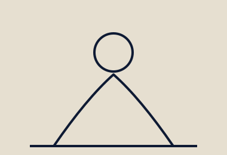

The First Story
Discover the myths and stories that inspired early civilizations.
An introduction to ancient storytelling and shared cultural origins. Free
LEARN · EXPERIENCE · CONNECT
ATLAS turns history and culture into lived experiences. Discover civilizations through hands-on activities, shared stories, and meaningful cultural connections.
See this term's offerings Request to join an activityDiscover the myths and stories that inspired early civilizations.
An introduction to ancient storytelling and shared cultural origins. Free

Explore legendary journeys and the meaning of heroes across cultures.
Compare heroic traditions through discussion and creative activities. 30 SAR
Experience the heritage and traditions carried through desert communities.
Learn how oral history connects generations. Free
★★★★★
“A wonderful way to discover how stories connect different civilizations.”
★★★★☆
“I loved comparing heroic journeys from different cultures.”
YOUR CULTURAL JOURNEY
Every experience adds a new chapter. Track your journey across civilizations and see what's next.
Illustrative progress only — interactive tracking is not part of Phase 2.